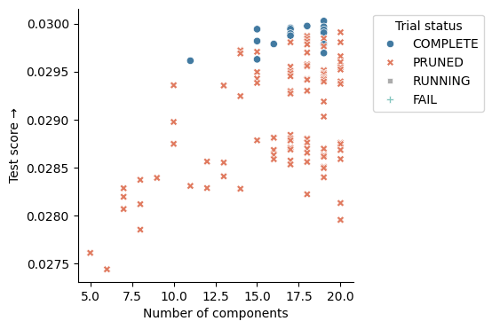

Tutorial 3: Tuning and training models¶
Once all of the data is QC, processed, and ingested, the real fun begins. This tutorial details, first, how to train a MuTopia model. Then, we’ll go over more rigorous hyperparameter tuning techniques to ensure a better fit to your data.
Prerequisites¶
Before starting this tutorial, ensure you have:
MuTopia package installed
Download the pre-compiled data to the
tutorial_datadirectory
1. Training a MuTopia model¶
1.1 Preparing and loading the data¶
The first step in preparing the data for model training is to split train and test sets. This is easiest using the CLI as below. I like to use chromosome 1 as the test set and train on everything else.
[1]:
!gtensor split tutorial_data/Liver.nc chr1
Writing samples: 100%|████████████████████████████████████████████| 185/185 [01:02<00:00, 2.97it/s]
Writing samples: 100%|████████████████████████████████████████████| 185/185 [00:28<00:00, 6.48it/s]
Import MuTopia:
[1]:
import mutopia.analysis as mu
Now, you can use gt.lazy_load or gt.load_dataset(..., with_samples=False) to load the dataset, while keeping the samples on-disk:
[2]:
train = mu.gt.lazy_load("tutorial_data/Liver.train.nc")
test = mu.gt.lazy_load("tutorial_data/Liver.test.nc")
1.2 Instantiating the model¶
Now, we can instantiate a model. Make sure to use the correct data modality - in this case {dataset}.modality(), and make a TopographyModel object.
There are a ton of configurable parameters, but the main ones you’ll often use are:
num_components- how many processes to fit.init_components- a list of signatures to initialize the model with.locus_subsample- to what degree to subsample the loci in the dataset for each update.batch_subsample- to what degree to subsample the samples in the dataset. I shoot for a batch size of at least 32.threads- number of threads to devote to update calculations.
Rules of thumb for training models¶
Always use some form of subsampling as batch training leads to overfitting. -
locus_subsampleworks by far the best.Make sure your iteration time is below 30 seconds by adjusting
threads,locus_subsampling, andbatch_subsample. Iteration time is proportional to the number of mutations used for the parameter updates. Using more mutations has diminishing returns over the number of steps you perform. I usually shoot for about 20 seconds per iteration to start (iteration time decreases as the model converges as well).Train until convergence (by not setting
num_epochs) - MuTopia will automatically stop the model when it detects it has converged.For really small datasets, use
init_componentsto specify starting points for the spectra. You can list COSMIC components like:["SBS1", "SBS3", ...].
[ ]:
SBS_model = mu.make_model_cls(train)
model = SBS_model(
num_components = 15,
seed=42,
locus_subsample=1/8,
threads=5,
eval_every=1, # just for illustration purposes; use a larger value in practice or your train time will increase
num_epochs=10, # just for illustration purposes; use a larger value in practice (like 1000 just to be safe)
)
INFO: Mutopia:JIT-compiling model operations ...
1.3 Training¶
Now, we are ready to train. Supply the train and the test sets to the fit method:
[5]:
model = model.fit(train, test)
INFO: Mutopia:Initializing model parameters and transformations...
INFO: Mutopia:Found strand features:
GeneStrand, ReplicationStrand
INFO: Mutopia:Found mesoscale features:[]
INFO: Mutopia:Found locus features:
ATACAccessible, DNase, GeneExpression, GenePosition,
H3K27ac, H3K27me3, H3K36me3, H3K4me1,
H3K4me3, H3K9me3, NucleotideRatio, RepliseqG1b,
RepliseqG2, RepliseqS1, RepliseqS2, RepliseqS3,
RepliseqS4
INFO: Mutopia:Validating datasets...
INFO: Mutopia:Found n=185 training samples across 1 datasets.
INFO: Mutopia:Preprocessing training datasets...
INFO: Mutopia:Preprocessing testing datasets...
WARNING: Mutopia:Calculating full factor normalizers for updates - this will increase the memory usage, but will reduce variance.
INFO: Mutopia:Using SVI.
INFO: Mutopia:Training model with 5 threads.
INFO: Mutopia:The first few epochs take longer as things get warmed up -
expect the time per epoch to decrease about 4-fold.
INFO: Mutopia:Model will stop training if no improvement in the last 50 epochs.
INFO: Mutopia:Training usually coverges much sooner than 10 epochs.
Epoch: 10/10 |██████████| [01:48<00:00, 10.85s/it] Scores, Best=0.027843, Recent=0.027172, 0.027352, 0.027563, 0.027724, 0.027843
INFO: Mutopia:Finalizing models ...
For score, higher is better - Don’t worry about the “low” score values this is mostly reflective of the sparse nature of the data.
You can save a model to disk using the model.save method:
[6]:
model.save("tutorial_data/trained_model.pkl")
Alternatively, you can perform the same training from the CLI using the command below:
Note: Make sure to use the --lazy flag!
[7]:
!topo-model train \
-ds tutorial_data/Liver.train.nc tutorial_data/Liver.test.nc \
-k 15 \
-o tutorial_data/cli_trained_model.pkl \
-@ 5 \
--seed 42 \
--locus-subsample 0.125 \
--eval-every 1 \
--num-epochs 10 \
--lazy
Training model with parameters:
Parameter Value
--------------------- ---------
num_components 15
threads 5
seed 42
locus_subsample 0.125
eval_every 1
num_epochs 10
locus_model_type gbt
use_groups True
add_corpus_intercepts False
empirical_bayes True
stop_condition 50
test_chroms ('chr1',)
INFO: Mutopia:Training with 1 dataset pairs
INFO: Mutopia:JIT-compiling model operations ...
INFO: Mutopia:Initializing model parameters and transformations...
INFO: Mutopia:Found strand features:
GeneStrand, ReplicationStrand
INFO: Mutopia:Found mesoscale features:[]
INFO: Mutopia:Found locus features:
ATACAccessible, DNase, GeneExpression, GenePosition,
H3K27ac, H3K27me3, H3K36me3, H3K4me1,
H3K4me3, H3K9me3, NucleotideRatio, RepliseqG1b,
RepliseqG2, RepliseqS1, RepliseqS2, RepliseqS3,
RepliseqS4
INFO: Mutopia:Validating datasets...
INFO: Mutopia:Found n=185 training samples across 1 datasets.
INFO: Mutopia:Preprocessing training datasets...
INFO: Mutopia:Preprocessing testing datasets...
WARNING: Mutopia:Calculating full factor normalizers for updates - this will increase the memory usage, but will reduce variance.
INFO: Mutopia:Using SVI.
INFO: Mutopia:Training model with 5 threads.
INFO: Mutopia:The first few epochs take longer as things get warmed up -
expect the time per epoch to decrease about 4-fold.
INFO: Mutopia:Model will stop training if no improvement in the last 50 epochs.
INFO: Mutopia:Training usually coverges much sooner than 10 epochs.
Epoch: 10/10 |█| [01:48<00:00, 10.89s/it] Scores, Best=0.027843, Recent=0.027172
INFO: Mutopia:Finalizing models ...
Training completed successfully. Best test score: 0.02784
2. Model hyperparameter tuning¶
Hyperparameter optimization provides a convenient way to launch many trial trainings to find the best hyperparameter configurations among them.
Trials are organized under a “study”. Create a study using the topo-model study create command. The most important parameters to specify are the study path (“studies/liver/01”), the datasets (you can provide multiple train/test pairs by providing multiple -ds flags), the minimum and maximum number of components to try out (-min and -max, respectively), --save-model, which will write models to disk under studies/<study_name> when trials complete, and whatever other
parameter values you would like to fix across trials (in this case, just the locus subsample rate, -lsub).
Optional: By adding -e flags (e.g. -e, -ee, etc.) you can increase how “extensive” the hyperparameter tuning is. For no e, MuTopia only tunes the number of components. For one e, MuTopia tunes the next most important hyperparameters, and so on. If you have the time, one -e is a good balance.
[8]:
!topo-model study create \
"studies/liver/01" \
-ds tutorial_data/Liver.train.nc tutorial_data/Liver.test.nc \
-min 5 -max 20 \
--save-model \
-lsub 0.125
Fixing parameters:
Parameter Value
--------------------- ---------
locus_subsample 0.125
init_components ()
fix_components ()
pi_prior 1.0
locus_model_type gbt
use_groups False
add_corpus_intercepts False
empirical_bayes True
stop_condition 50
num_epochs 2000
test_chroms ('chr1',)
[I 2025-10-20 10:14:26,742] Using an existing study with name 'mutopia_tuning_study' instead of creating a new one.
Successfully created optimization study: studies/liver/01
Now, you can launch trials from the CLI, which makes this easy to parallelize using slurm jobs on a server. Just refer the study_name using the path and your runtime options (laziness and number of threads), and you’re off!
[9]:
!topo-model study run "studies/liver/01" --lazy -@ 5
INFO: Mutopia:JIT-compiling model operations ...
INFO: Mutopia:Running trial 1 with params:
num_components: 16
INFO: Mutopia:Initializing model parameters and transformations...
INFO: Mutopia:Found strand features:
GeneStrand, ReplicationStrand
INFO: Mutopia:Found mesoscale features:[]
INFO: Mutopia:Found locus features:
ATACAccessible, DNase, GeneExpression, GenePosition,
H3K27ac, H3K27me3, H3K36me3, H3K4me1,
H3K4me3, H3K9me3, NucleotideRatio, RepliseqG1b,
RepliseqG2, RepliseqS1, RepliseqS2, RepliseqS3,
RepliseqS4
INFO: Mutopia:Validating datasets...
INFO: Mutopia:Found n=185 training samples across 1 datasets.
INFO: Mutopia:Preprocessing training datasets...
INFO: Mutopia:Preprocessing testing datasets...
WARNING: Mutopia:Calculating full factor normalizers for updates - this will increase the memory usage, but will reduce variance.
INFO: Mutopia:Using SVI.
INFO: Mutopia:Training model with 5 threads.
INFO: Mutopia:The first few epochs take longer as things get warmed up -
expect the time per epoch to decrease about 4-fold.
INFO: Mutopia:Model will stop training if no improvement in the last 50 epochs.
INFO: Mutopia:Training usually coverges much sooner than 2000 epochs.
Epoch: 49/2000 | | [07:30<4:44:44, 8.76s/it] Scores, Best=0.029113, Recent=0.02INFO: Mutopia:Beginning to update priors.
Epoch: 67/2000 | | [10:07<4:43:04, 8.79s/it] Scores, Best=0.029312, Recent=0.02^C
Epoch: 67/2000 | | [10:14<4:55:25, 9.17s/it] Scores, Best=0.029312, Recent=0.02
INFO: Mutopia:Finalizing models ...
I usually use this wrapper script to launch job arrays on SLURM servers:
#!/bin/bash
#SBATCH --ntasks=1
#SBATCH --cpus-per-task=5
#SBATCH --mem-per-cpu=500
#SBATCH --time=05:00:00
#SBATCH --output=logs/%x/%j_%a.log
study_name=${SLURM_JOB_NAME}
time_limit=$((60*5 - 10)) # in minutes
echo "Running trial for study: ${study_name}, time limit: ${time_limit} minutes"
topo-model study run ${study_name} -@ 5 --lazy --time-limit ${time_limit}
Save this wrapper as run-trials.sh. Then, you can launch array jobs for different studies using:
$ study_path="studies/liver/01"
$ sbatch --job-name=$study_path --array=1-5%20 run-trials.sh
Start slow, launching a few jobs to see what sort of memory you require, then scale up! Make sure to adjust the job time if needed.
To look at the results of a study, you can use topo-model study summary. You can check out the results by referring to a study via it’s path:
[14]:
!topo-model study summary "studies/liver/01" -o results.csv
!head -n 3 results.csv
Results saved to: results.csv
number,value,state,user_attrs_model_path,num_components
0,0.0023026805200607736,COMPLETE,studies/liver/01/trial=0.pkl,15
1,,RUNNING,studies/liver/01/trial=1.pkl,16
Obviously, this is more exciting if you’ve run more trials. I included the results from a full tuning run on the the tutorial data to demonstrate how to choose the best model.
[11]:
import pandas as pd
import seaborn as sns
import matplotlib.pyplot as plt
results = pd.read_csv("tutorial_data/study_results.csv")
_, ax = plt.subplots(figsize=(4,4))
sns.scatterplot(
data=results,
x="num_components",
y="value",
style="state",
hue="state",
palette=mu.pl.categorical_palette,
)
ax.legend(
title="Trial status",
bbox_to_anchor=(1.05, 1),
loc='upper left'
)
ax.set(
xlabel="Number of components",
ylabel="Test score \u2192",
)
sns.despine()

[12]:
results.head(10)
[12]:
| number | value | state | user_attrs_model_path | num_components | |
|---|---|---|---|---|---|
| 0 | 93 | 0.030026 | COMPLETE | studies/liver/01/trial=93.pkl | 19 |
| 1 | 151 | 0.029974 | COMPLETE | studies/liver/01/trial=151.pkl | 18 |
| 2 | 73 | 0.029966 | COMPLETE | studies/liver/01/trial=73.pkl | 19 |
| 3 | 130 | 0.029955 | COMPLETE | studies/liver/01/trial=130.pkl | 17 |
| 4 | 126 | 0.029942 | COMPLETE | studies/liver/01/trial=126.pkl | 17 |
| 5 | 110 | 0.029941 | COMPLETE | studies/liver/01/trial=110.pkl | 15 |
| 6 | 85 | 0.029934 | COMPLETE | studies/liver/01/trial=85.pkl | 19 |
| 7 | 137 | 0.029909 | PRUNED | NaN | 20 |
| 8 | 97 | 0.029904 | COMPLETE | studies/liver/01/trial=97.pkl | 19 |
| 9 | 114 | 0.029896 | COMPLETE | studies/liver/01/trial=114.pkl | 17 |
You can select the best model using the “elbow” method (value versus the num_components), and load it from the user_attrs_model_path column. In this case, you should choose the model with the least topics that achieves close to the maximum score. Above, the best model with 15 components meets these criteria.
Note: The “Pruned” models were determined by the optimization engine to be under-performing, and so their execution was terminated to save computational resources!
If a promising model failed to save for some reason (early termination, memory overflow, etc.) you can re-train it with the same parameters using:
[15]:
!topo-model study retrain "studies/liver/01" 0 "best_model.pkl" --lazy -@ 5
INFO: Mutopia:JIT-compiling model operations ...
INFO: Mutopia:Initializing model parameters and transformations...
INFO: Mutopia:Found strand features:
GeneStrand, ReplicationStrand
INFO: Mutopia:Found mesoscale features:[]
INFO: Mutopia:Found locus features:
ATACAccessible, DNase, GeneExpression, GenePosition,
H3K27ac, H3K27me3, H3K36me3, H3K4me1,
H3K4me3, H3K9me3, NucleotideRatio, RepliseqG1b,
RepliseqG2, RepliseqS1, RepliseqS2, RepliseqS3,
RepliseqS4
INFO: Mutopia:Validating datasets...
INFO: Mutopia:Found n=185 training samples across 1 datasets.
INFO: Mutopia:Preprocessing training datasets...
INFO: Mutopia:Preprocessing testing datasets...
WARNING: Mutopia:Calculating full factor normalizers for updates - this will increase the memory usage, but will reduce variance.
INFO: Mutopia:Using SVI.
INFO: Mutopia:Training model with 5 threads.
INFO: Mutopia:The first few epochs take longer as things get warmed up -
expect the time per epoch to decrease about 4-fold.
INFO: Mutopia:Model will stop training if no improvement in the last 50 epochs.
INFO: Mutopia:Training usually coverges much sooner than 2000 epochs.
Epoch: 10/2000 | | [02:06<5:47:50, 10.49s/it] Scores, Best=0.027611, Recent=0.00^C
Aborted!
To investigate model performance more thoroughly, you can load the Optuna study directly using the python API:
[16]:
study, *_ = mu.tuning.load_study("studies/liver/01")
study
[16]:
<optuna.study.study.Study at 0x1440d0810>